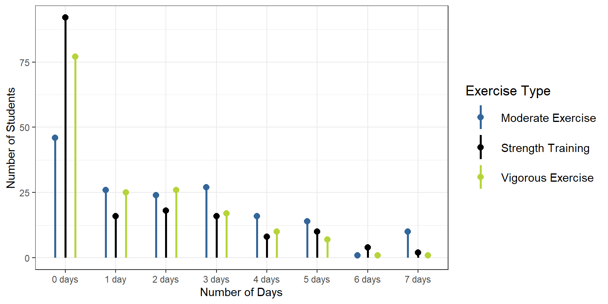
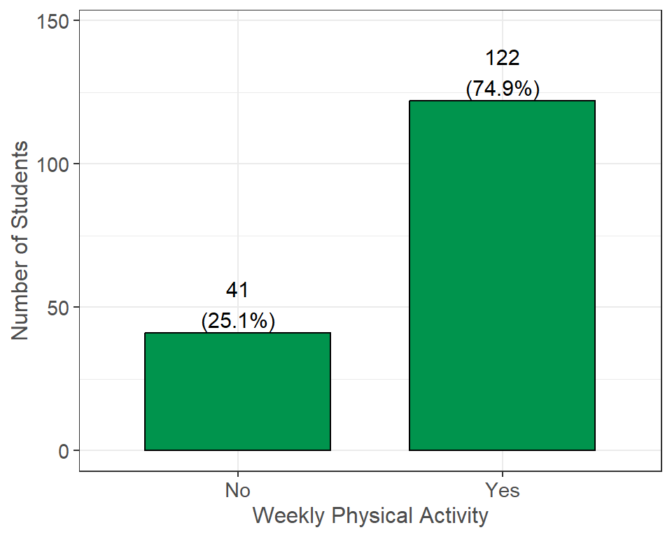

| Days | 0 | 1 | 2 | 3 | 4 | 5 | 6 | 7 |
| Moderate Exercise | 46 (28.0%) | 26 (15.9%) | 24 (14.6%) | 27 (16.5%) | 16 (9.8%) | 14 (8.5%) | 1 (0.6%) | 10 (6.1%) |
| Strength Training | 77 (47.0%) | 25 (15.2%) | 26 (15.9%) | 17 (10.4%) | 10 (6.1%) | 7 (4.3%) | 1 (0.6%) | 1 (0.6%) |
| Vigorous Training | 92 (55.4%) | 16 (9.6%) | 18 (10.8%) | 16 (9.6%) | 8 (4.8%) | 10 (6.0%) | 4 (2.4%) | 2 (1.2%) |
Physical Activity
Students were asked to select how many days in the last week they had done any of the following exercise types: moderate, vigorous, or strength training exercises.1
As a reminder, students had the option to select “Prefer not to answer” for all questions, and these responses were set as missing values. In addition, 11 (6.0%) students did not finish the survey. The n reporting refers to the total number of non-missing responses, while the percent reporting reflects the percent of non-missing responses.
Physical Activity Type

Survey Questions: On how many of the past 7 days did you: (Please mark the appropriate column for each row)
Do moderate-intensity cardio or aerobic exercise (caused a noticeable increase in heart rate, such as brisk walk) for at least 30 minutes? (n=164, 90% of 182 reporting)
How often did you do 8-10 strength training exercises (such as resistance weight machines) for at least 8 repetitions each? (n=166, 91% of 182 reporting)
How often did you do vigorous-intensity cardio or aerobic exercise (caused large increases in breathing or heart rate, such as jogging) for at least 20 minutes? (n=166, 91% of 182 reporting)
Additional Notes: For each exercise type, students had the option to select anywhere from zero days per week to seven days per week. In the table, percentages are calculated across rows.
Summary: The majority of students reported doing moderate-intensity exercises at least once in the past seven days, and 46 (28.0%) reported doing this zero times. About half the students reported doing strength training exercises at least once in the past 7 days, and 77 (47.0%) reported doing this zero times. Less than half of the students reported doing vigorous-intensity cardio or aerobic exercises at least once in the past 7 days, and 92 (55.4%) reported doing this zero times.
Weekly Physical Activity

Survey Questions: See Questions Above
Additional Notes: This variable was created using the variables in the Physical Activity Type section. Anyone who performed any type of weekly physical activity (moderate-intensity, strength training, or vigorous-intensity) for one or more days was set to “Yes,” and anyone who performed no physical activity per week was set to “No.”
Summary: A total of 122 (74.8%) students performed any type of physical activity at least once per week, while 41 (25.2%) performed no weekly physical activity.
Footnotes:
- These questions were developed based on the Surgeon General’s physical activity guidelines for adults who recommend: 150 minutes to 300 minutes a week of moderate-intensity exercise, 75 minutes to 150 minutes a week of vigorous-intensity aerobic exercise, or an equivalent combination of moderate- and vigorous-intensity aerobic activity. They also recommend strength-training activities on 2 or more days a week.